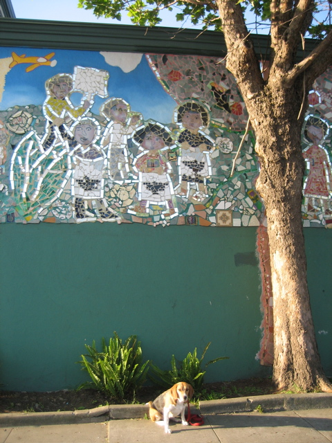

<--Previous
Up
Next-->

Tribute to Dolores Huerta
The heart in this mosaic mural on Leonard R. Flynn Elementary is hard to find: it's behind a glass panel in the chest of the woman directly above Huxley.